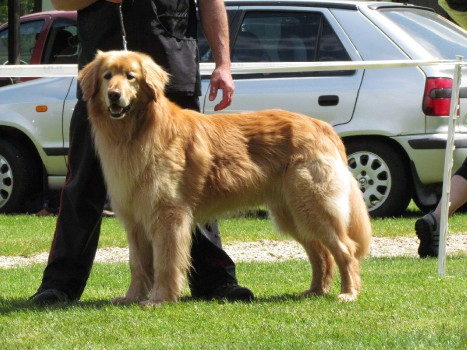
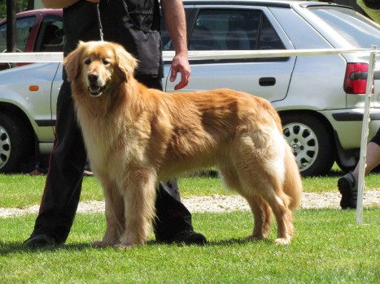

Ch. CHARLOTTE Aldeon
Narodená: 20.03.2014
Výška: 64cm Hmotnosť: 34,5kg
RTG: HD A, ED: 0/0
očné vyšetrenie: negat.
Tituly: Šampión Slovenska, Klubový šampión SHK
Working DogChovná - Bonitácia 24.4.2016, Duchonka
Hodnotenie povahy: AAA
AA - počas prechodu skupinou a strelby, počas merania - istý, priateľský a sebavedomý.
A -hodnotenie bojovnosti: razantný útok, pri obrane psovoda neuhýba na náznaky úderu palice.
Rozhodca pre výkon: p. Peter Lengvarský
Výstavy:
10.1.2015 MVP Nitra - trieda mladých V2
2.5.2015 - Klubová výstava Podskalie - trieda mladých - V1, CAJC, Najkrajší mladý. Rozhodca: Sigrid Darting-Entenmann (DE) + Kirsten Wesche (DE)
4.7.2015 - MVP Veľká Ida - trieda mladých V1, CAJC, Víťaz Slovenska mladých
29.8 2015 - Špeciálna výstava SHK Stará Myjava - trieda stredná V2, res.CAC, rozhodca: Martin Slezák (ČR)
13.9. 2015 - IHF Hovawart Show Italy, San Rossore (Pisa), trieda stredná V1, res.CAC, rozhodca: Sigrid Darting-Entenmann (DE)
16.1.2016 - MVP Nitra, trieda otvorená V2, res.CAC
17.4. 2016 - Klubová výstava SHK, Duchonka - trieda otvorená V1, CAC, rozhodca: Terézia Gargušová (SK)
12.6.2016 - MVP Nitra, trieda otvorená V1, CAC
2.7.2016 - Celoštátna výstava psov Veľká Ida, trieda otvorená V2, res.CAC
4.12.2016 - MVP Nitra, trieda otvorená V1,CAC, res. CACIB
 

Matka: Ch. DJAMILA Aldeon
Narodená: 18.4.2011
Tituly: Šampión Slovenska, Klubový šampión SHK
RTG: HD A, ED: 0/0 , DM N/N
očné vyšetrenie: negat.
Výstavy: 2x CAJC, 4xCAC, 2xR.CAC, CACIB
Otec: ARMIN Hali Gali (ČR)
Narodený: 02.04.2006
Prüfungen: ZTP, BGH3
Ausstellungen: Vorzüglich 1, Klubsieger 2009, BOB, CACA, CACIB
HD frei